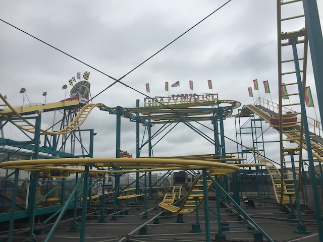

| |
Crazy Mouse Review

We're here at an American Fair, the San Diego Fair to be exact, where we're going to be reviewing Crazy Mouse. Oh boy. An ordinary Spinning Mouse. We get into our cars and away we go. We roll through a turn and head up the lifthill. You head off the lifthill and into a turn. You're not spinning yet. We'll get to that later. So right now, it's just like an ordinary Wild Mouse. The Switchbacks arn't that great as there's not that much whip and the laterals arn't comfortable. After the switchbacks, you head into a small drop and back up the small hill. This is fun. We then head into the biggest drop of the ride. WEE!!!! We then head into some double up thing which sadly, but not suprisingly, has no airtime. We then jolt around another turn and head into the second set of switchbacks. However as we head straight into them, we begin to spin. And on Crazy Mouse, you spin FAST!!!!!!!!!! HOLY CRAP!!! YOU SPIN SO F*CKING FAST ON THIS RIDE!!!!!! I actually couldn't see where we were going. Now THAT makes for a good spinning mouse ride. After a couple switchbacks, we head through one last turn, and then we head into a small drop. That small drop is actually f*cking insane thank's to the ride's insane spinning. I seriously think that this ride smoked crack because it was awesome. You then spin through a couple bumps. Then you head through one last turn and head into the brakerun. Stacking here is fine since your car is still spinning and considering how fast we were spinning, we've got a while before our spinning dies down. Crazy Mouse is a FANTASTIC spinning mouse ride that really knows how to spin. I'm not sure what they did to this ride, but this version must've been greased up or something cause the ONLY other spinner that even comes close would be Ragin Cajun. If you're a fan of Spinning Mice, or anything spinning related I'd recommend riding it. This thing is actually worth tickets, especially if there aren't any crazy flat rides at the fair like Zipper or Tango.
7/10
Location: American Fairs
Opened: ???
Built by: Reverchon
Last Ridden: June 02, 2019
I have ridden this exact same ride at the following parks.
Farup Sommerland
Kennywood
Walt Disney World Resort
Yokohama Cosmoworld
Crazy Mouse Photos


Home
|